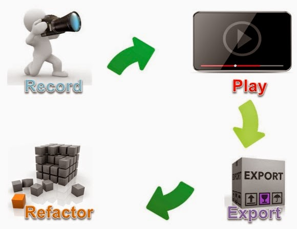
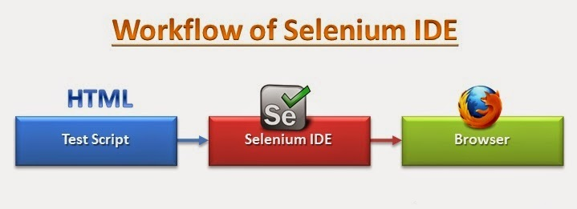
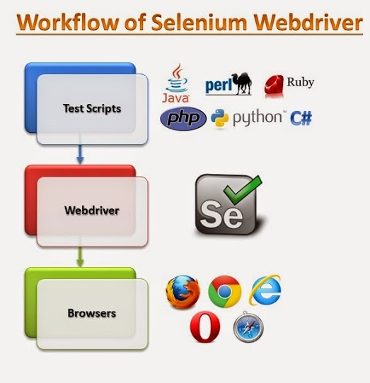
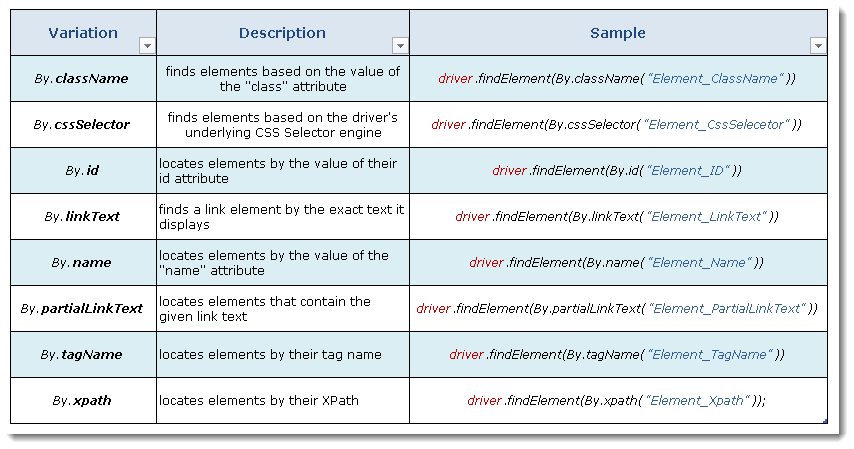
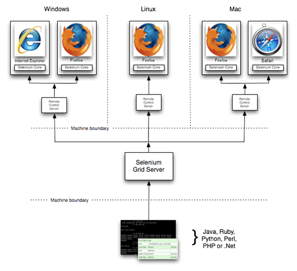
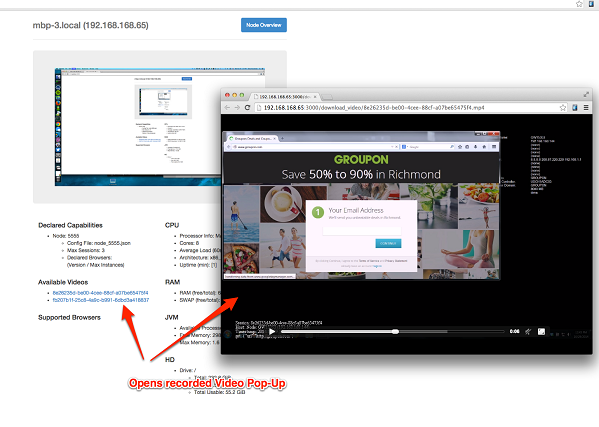

Selenium IDE, Builder and WebDriver API

TABLE OF CONTENTS
Location strategy
-
Locating Web Elements via
- Identifier
- Id
- Name
- Link
- DOM
- XPath
- CSS
- UI-element
NOTE: Each one has PROS and CONS!
Target
-
For many Selenium commands, a target is required
- Identifies an element in the content of the web application
- Consists of the location strategy followed by the location in the format: locatorType=location
- The locator type can be omitted in many cases
Target (2)
-
Locating by identifier is the most common method of locating elements
- A catch-all default when no recognized locator type is used
- The first element with the id attribute value matching the location is used
- If no element has a matching id attribute, then the first element with a name attribute matching the location is used
- Preferably follow the order id > name > Identifier > css > xpath
Locating Web Elements by ID
- Locating by Id is more explicit, but also more limited than the identifier locator type
- We must use it when there is available element id attribute
Locating Web Elements by Name
-
The name locator type will locate the first element with a matching name attribute
- If multiple elements have the same value for a name attribute, then you can use filters to further refine your location strategy
- The default filter type is value (matching the value attribute)
Locating Web Elements by XPath
-
XPath is the language used for locating nodes in an XML (XHTML) document
- Useful when we don’t have a suitable id or name attribute for the element
- XPath locators can also be used to specify elements via attributes other than id and name
- Only xpath locators start with “//” or “./”
Absolute or Relative Xpath Location
-
Types of XPath location:
-
Absolute
- Contains the location of all elements from the root (html) (e.g., xpath=/html/body/form)
- Very likely to fail after adjustments
-
Relative
- Relative to an element that does have an id or name attribute
- e.g., //input[@name=’username’] - First input element with attribute named ‘name’ and the value ‘username’
Locating Hyperlinks by Link Text
- Hyperlink can be located in the web page by using the text of the link.
- If two links with the same text are present, then the first match will be used.
- e.g. link=Yes / link=No
Locating Web Elements by DOM
- The Document Object Model (DOM) represents an HTML document and can be accessed via JavaScript.
- Takes JavaScript that evaluates to an element on the page
- Can be simply the element’s location using the hierarchical dotted notation
- Since only dom locators start with “document”, the dom= label can be omitted
- e.g. dom=document.getElementById(’loginForm’)
Locating Web Elements by CSS
- CSS (Cascading Style Sheets) is a language for describing the rendering of HTML and XML documents
- CSS uses Selectors for binding style properties to elements in the document
- These Selectors can be used by Selenium as another locating strategy
- Faster than Xpath
- Can find the most complicated objects in an intrinsic HTML document
- e.g. css=div > a
Selenium flavours
Easy !?
Selenium IDE
Selenium Builder
Selenium WebDriver
Why use the Se WebDriver?
- A tool for automating web application testing
- Developed to better support dynamic web pages where elements of a page may change without the page itself being reloaded(AJAX)
- Makes direct calls to the browser using each browser’s native support for automation the page itself being reloaded.
WebDriver Wire Protocol
- All implementations of WebDriver that communicate with the browser, or a Remote WebDriver server shall use a common wire protocol
- The wire protocol defines a RESTful web service using JSON over HTTP implemented in request/response pairs of "commands" and "responses“
Creating Driver
- Create an instance of a driver
- Additional steps are required to use Chrome Driver, Opera Driver, Android Driver and iPhone Driver
// Create a new instance of the Firefox driver
// Notice that the remainder of the code relies on the interface,
// not the implementation.
WebDriver driver = new FirefoxDriver();
Element Locators
-
By ID
WebElement element = driver.findElement(By.id("submit")); // Action can be performed on Input Button element element.submit(); -
By Class
WebElement parentElement = driver.findElement(By.className("button")); -
By Tag Name
WebElement element = driver.findElement(By.tagName("button"));
Element Locators (2)
-
By Name
WebElement element = driver.findElement(By.name("firstname")); // Action can be performed on Input Text element element.sendKeys("ToolsQA"); -
By Link text
WebElement element = driver.findElement(By.linkText("Partial Link Test")); element.clear(); //Or can be identified as WebElement element = driver.findElement(By.partialLinkText("Partial"); element.clear();
Element Locators (3)
-
By XPath
WebElement element = driver.findElement(By.xpath("//div[@id='bottom']/div[1]/a[@class='ext-link']")); -
By CSS
WebElement ele1 = driver.findElement(By.cssSelector(".primary-btn")); -
Chain of locators (first one serve as container)
WebElement anElement = driver.findElement(By.id(“parent-id”)) .findElementBy(By.class(“unique-enough-attribute”));
XPath Syntax
-
What is XPath?
- A (programming language) syntax for defining parts of an XML documen
- Uses path expressions to navigate in XML documents
- Contains a library of standard functions
- Is a major element in XSLT
- Is a W3C recommendation
Summary
Call Wrappers
Common Actions
Type Text into a field using Selenium WebDriver sendKeys() function
// Find the text input element by its name
WebElement element = driver.findElement(By.name("search"));
// Enter something to search for
element.sendKeys(“selenium");
Common Actions (2)
Select DropDown value
SelectElement selectElement =
new SelectElement(driver.findElement(By.XPath("//select")));
selectElement.selectByText(" Mercedes ");
Common Actions (3)
Verify WebElement Text
String text =
driver.findElement(By.xpath("//div[@id='TITLE']/div")).getText();
Asserts
No built-in method to assert text on a page
WebDriver driver = new ChromeDriver("C://libs//chromedriver.exe");
driver.get(http://www.google.com);
assertEquals("Google", driver.title);
DRY your code
Clicks and Waits for page to load
public void clickAndWait(String elementLocator, String waitPeriod) {
selenium.click(elementLocator);
selenium.waitForPageToLoad(waitPeriod);
}
‘Safe Operations’ for Element Presence
Clicks on an element only if it is available on a page.
public void safeClick(String elementLocator) {
if(selenium.isElementPresent(elementLocator)) {
selenium.click(elementLocator);
} else {
// Using the TestNG API for logging
Reporter.log("Element: " + elementLocator + ", is not available on a page - "
+selenium.getLocation());
}
}
Selenium Grid
Allows us to run our tests on different machines against different browsers in parallel
- PROS
- Tool for distributing tests across multiple physical or virtual machines simultaneously.
- Dramatically accelerates the testing process and returns a quick feedback.
- The code doesn’t need to be present on the machines which run the tests.
- Hub and Node
- Hub - central point where the tests would be triggered. A Selenium Grid has only one Hub and it is launched on a single machine once.
- Node - Nodes are the Selenium instances that are attached to the Hub which execute the tests. There can be one or more nodes in a grid which can be of any OS and can contain any of the Selenium supported browsers.
Setup Selenium-Grid
- Installation is simple. Download the Selenium-Server jar file from the SeleniumHq website’s download page. You want the link under the section “Selenium-Server (formerly Selenium-RC)”.
- Install it in a folder of your choice. You’ll need to be sure the java executable is on your execution path so you can run it from the command-line. If it does not run correcly, verify your system’s path variable includes the path to the java.exe.
Setup Selenium-Grid (2)
Step 1: Start the hub
java -jar selenium-server-standalone-2.14.0.jar -role hub
Step 2: Start the nodes
java -jar selenium-server-standalone-2.14.0.jar -role node -hub http://localhost:4444/grid/register
Using grid to run tests
DesiredCapabilities capability =
DesiredCapabilities.Firefox();
Driver = new RemoteWebDriver(new Uri("http://localhost:4444/wd/hub"), capability);
Selenium-Grid-Extras
 evgenikostadinov@gmail.com
evgenikostadinov@gmail.com